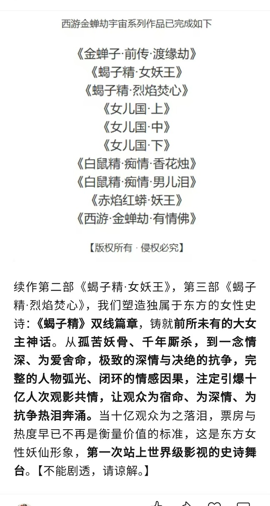
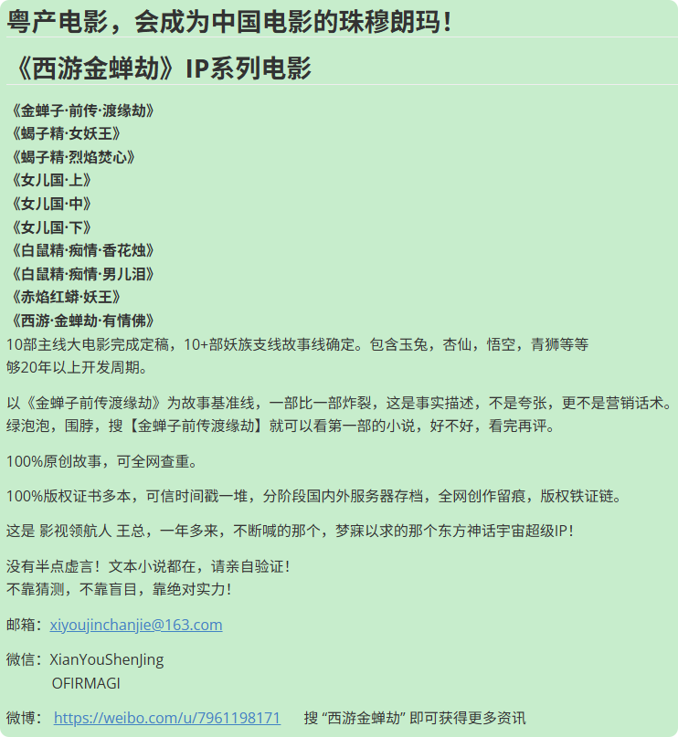

🔥 拉格朗日光影动画 之 《西游金蝉劫》东方神话超级 IP 定义：🔥
1、《西游金蝉劫》宇宙影视超级 IP。是一套提前定稿、版权锁定、时间戳确权、完整闭环、哲学立根、情感铸魂、人物成阵、长线可续二十年的顶级东方神话 IP 矩阵，是唯一能填补中国影视宇宙空白、真正对标漫威叙事体系的东方神话终局 IP。
2、我们打破国产 IP“单片爆红、后继无力” 的宿命，以二十余部定稿大电影，搭建一套完整自洽、层层联动、具备无限延伸空间的东方神话世界观。
3、根植于《西游记》国民级文化母体，观众自带人物认知与情感基因，无需复杂世界观科普，实现低认知成本入场，大幅降低项目启动与宣发门槛。
4、坚守创作者主权：IP 母公司牢牢锁定底层版权与核心股权；单个项目设立独立 SPV，开放资本、制作资源作价入股，构建创作、资本、制作三方利益共同体。
5、卡位 AIGC 院线级拐点（2027 年中），采用传统管线与 AIGC 路径双轨并行，兼顾成片质量与生产效率，拿到最优解。
6、IP 兼具厚重哲学根基与强情感穿透力，叙事契合主流文化导向，宗教内容合规；不走黑化改编，拒绝空洞说教，爽点与共情点的排布密度，目前国内独一档。
7、衍生品、IP 授权、文旅落地拥有千亿级商业空间。项目沉淀几十个独家角色资产、上百个独家场景资产，每个角色、每处场景均可独立拆分授权，支撑 20 年以上长线商业开发。
8、以东方哲学为底色，锚定人类共通情感，具备覆盖东亚文化圈、面向全球市场的文化出海潜力。
9、我们预判：未来 20 年，很难诞生同档次的竞品 IP。
🔴 定义中，大量绝对性表述，并非狂妄。看下文：
🌈《西游金蝉劫》东方神话超级 IP 详细定义
https://weibo.com/ttarticle/p/show?id=2309405343334582583503
点击，看微博文章⚡ 一个国民级超级IP，不是那么容易出来的！全国各地都在大范围的开展文创比赛，以期能够得到一个长线开发的超级爆款IP，有那么容易吗？成都，找了十年，也没找到那个可以替代哪吒的IP，其他地方一下子就能找到吗？
⏩好IP是绝对的稀缺品。
🌈《西游金蝉劫》东方神话超级 IP 定义--逐条真实性分析 合作伙伴必读
https://weibo.com/ttarticle/p/show?id=2309405344029146742857
点击，看微博文章⚡ 东方神话超级 IP 定义的9条内容，很多人都会觉得太狂了，没关系，咱们来一条条过。最好呢，你用你的手机或电脑，跟着这个分析对话，一条条测试你的豆包或者DeepSeek，看看你手机的回答有什么不一样的。自己也活了几十岁，也有行业经验，自己判断一下就好了。
⏩看完你会觉得，好IP，100%是极度稀缺品。本IP的SPV项目已经开放融资，优先给看得懂的同频者机会。


🌈总导演方案：《金蝉子·前传·渡缘劫》3D动画电影
https://mp.weixin.qq.com/s/-qg4rH-ifPonE6hZ8E__MQ
点击，看公众号之 总导演方案：《金蝉子·前传·渡缘劫》3D动画电影⚡ 这是整个IP的第一部电影，非常重要，是后面20部电影的根苗。必须是精品才能上荧幕！
⏩欢迎阅读并给出合理建议
🌈《西游・金蝉劫》IP 公开参考阅读清单。 重要阅读提醒，避免认知错位
https://weibo.com/ttarticle/p/show?id=2309405339116400410737
点击，看微博文案，阅读指引⚡ 这是给合作方的快速阅读指引，用于理解整个IP的概况，理解故事细节，人物性格等
⏩对于动画制作，商业开发，认知对齐是最重要的事情。